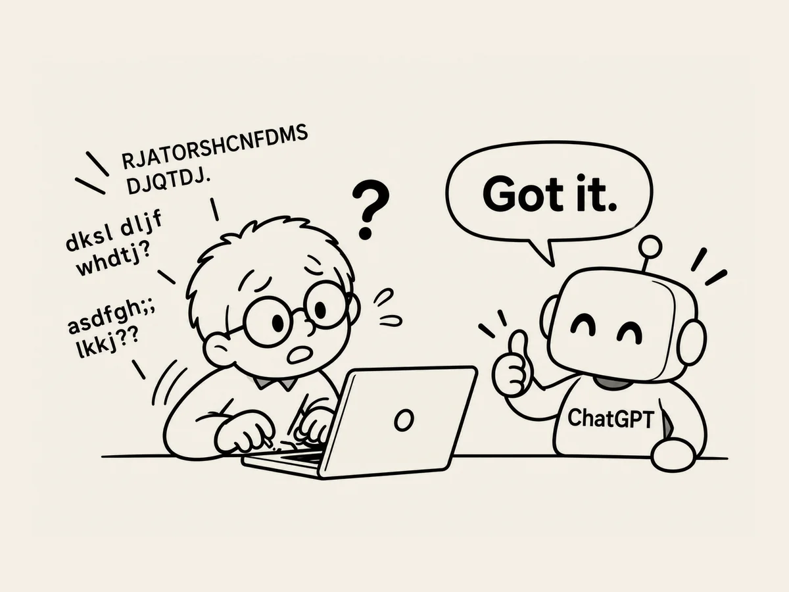

2.
誤字があっても、ちゃんとわかってくれるAI。
タイピングしていると、
誤字が出ることがある。
最初は、
直してから送っていた。
でも忙しい日に、
誤字を直さず、
そのままEnterキーを押した。
ちゃんとわかっている。
それからは、
忙しいときは誤字があっても、
そのまま話すようになった。
問題ない。
ときどき、
間違ったキーを押して、
変な文字が出ることもある。
それでも、
たいていわかってくれる。
文章がめちゃくちゃでも、
前後を見て、
僕が何を言おうとしているのかを
わかってくれる。
賢いAI。
でも、
一つ問題がある。
最近、
誤字があっても
あまり気にしなくなった。
どうせ、
わかってくれるから。
スペルも、
だんだん適当になってきた。
ちょっと待って。
このままだと、
AIはどんどん賢くなって、
僕はスペルさえまともにわからない人間に
なるんじゃないか？
